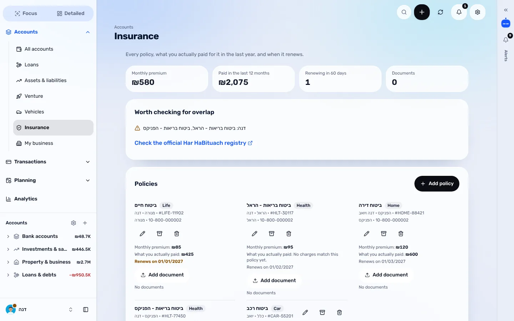

Every policy, and the document someone will need one day.
Insurance is scattered across companies, agents and bank charges. Penny gathers it into one list, shows what it really costs, and prepares a document for whoever will need to find everything.
Every policy in one list
For each policy you see what it covers, the excess, when it renews and who the agent is, and you can attach its documents.


What you actually paid
Payments leaving your bank and card are matched to their policy, so you see what was really paid for each one in the last year, not just the premium written in the policy.
A double-insurance check
Penny flags policies that look like they overlap, so you can check whether you are paying twice for the same cover. Overlapping insurance also counts in "Money on the table".
Insurance from your pension report
When you import your agent's report, each policy in it lands in the insurance list. More on pension and savings.
A family document
One document for the day someone else needs to find everything.
Good to know
- The check flags a suspected overlap. Whether to cancel a policy is your decision, with the insurer or your agent.
- This is not a recommendation or insurance advice.
- Policies and documents are stored on your computer, like the rest of your data.
Questions and answers
How do I add a policy?
By hand on the insurance screen, or by importing your agent's report, which brings in the policies it lists.
How does Penny know what I paid?
It matches charges from your bank and card to their policy, and adds up what was paid in the last year.
What is double insurance?
Two policies that cover the same thing, such as two health policies. Penny flags these so you can check them.
Why a family document?
So that if something happens, whoever is left doesn't have to search for which accounts, savings and insurance the household has.
See it with a sample household first.
The online version is the full app, running in your browser, with a year of made-up transactions, budgets, pension and goals. No signup, and nothing reaches a bank, an AI provider or Telegram.